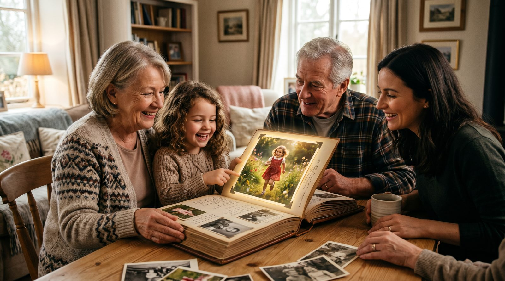

Детские фотографии — это не только кадры из прошлого, но и настоящие хранилища воспоминаний. Оживив такое фото, вы можете подарить себе и близким мгновения радости и ностальгии. Узнайте, как легко и быстро это сделать с помощью VideoAI.
Оживление детских фотографий может стать потрясающим подарком как для вас, так и для ваших близких. Представьте, как внезапно оживает лицо на фото, улыбаясь вам из прошлого. Это может стать не только сюрпризом, но и трогательным моментом на семейных праздниках или юбилеях.
Кроме того, оживление фото — это способ сохранить память о вашем детстве в новом формате. Такие видео могут стать частью семейного архива, который передается из поколения в поколение. Это дополнит ваши фотоальбомы и позволит молодым поколениям увидеть своих предков в движении, что особенно важно для укрепления семейных связей.
Чтобы достичь наилучшего результата, важно правильно выбрать фотографию. Лучше всего подходят фото, где лицо ребенка снято анфас и в хорошем фокусе. Это позволит нейросети точнее распознать черты и создать более реалистичное видео.
Если у вас есть старые или поврежденные снимки, их также можно использовать. Однако перед загрузкой желательно отсканировать фото в высоком разрешении и обработать в графическом редакторе, чтобы улучшить качество изображения. Обратите внимание, чтобы на фото было одно лицо, так как это упростит процесс оживления.
Чтобы оживить детское фото через VideoAI, вам не нужно регистрироваться на сайте. Просто зайдите на botisk.ru и загрузите выбранное изображение. Сервис предложит вам несколько вариантов анимации, и вы сможете выбрать наиболее подходящий. Процесс создания видео занимает около 60 секунд.
Первое видео вы получаете бесплатно, что позволяет попробовать сервис без финансовых рисков. Оплата за дальнейшие видео начинается от 290 рублей за пакет из 10 видео, что делает процесс доступным и простым.
| Способ | Время | Цена | Результат |
|---|---|---|---|
| VideoAI | ~60 сек | Первое бесплатно, от 290р за 10 видео | Высокое качество, быстро |
| Студия | 1-2 недели | От 5000р | Высокое качество, долго |
| Фрилансер | 3-7 дней | От 1500р | Разное качество, средняя скорость |
| Зарубежные сервисы | ~60 сек | От $5 | Хорошее качество, нужны карты |
Если вас интересуют другие варианты, посмотрите наши статьи: как оживить старое фото и оживить фото дедушки.
Без регистрации. Первое видео — бесплатно. Загрузите снимок — получите живое видео за 60 секунд.
Создать видео из фото →Лучше выбирать фото с одним лицом, это позволит нейросети точнее создать анимацию. Несколько лиц могут запутать алгоритм.
Попробуйте отсканировать и обработать фото в графическом редакторе для улучшения качества перед загрузкой в сервис.
Сервис поддерживает большинство популярных форматов, включая JPEG и PNG. Главное, чтобы качество изображения было достаточным для распознавания.